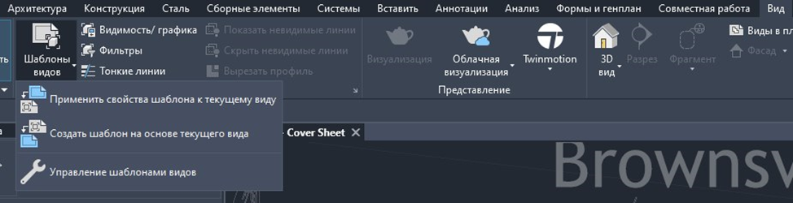
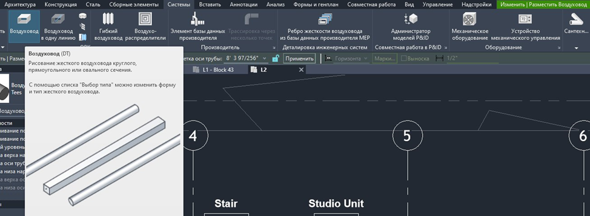
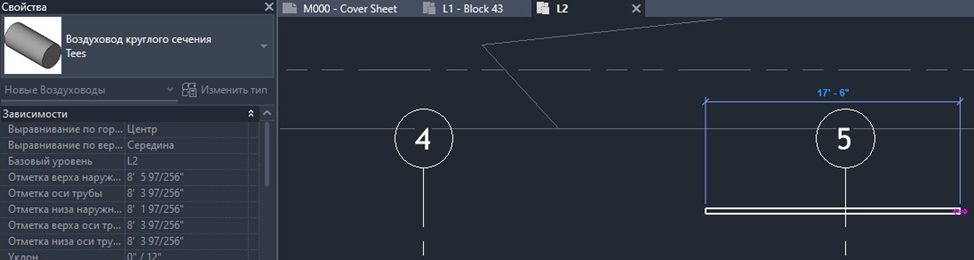
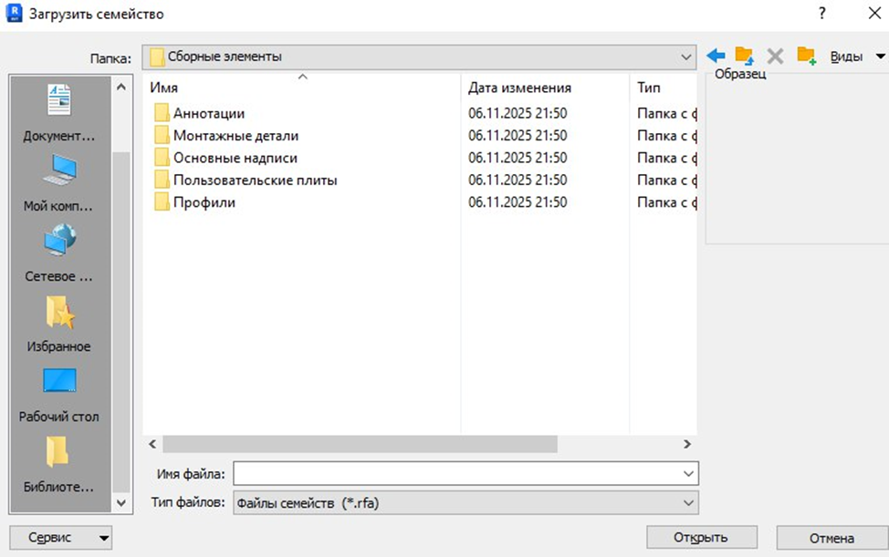
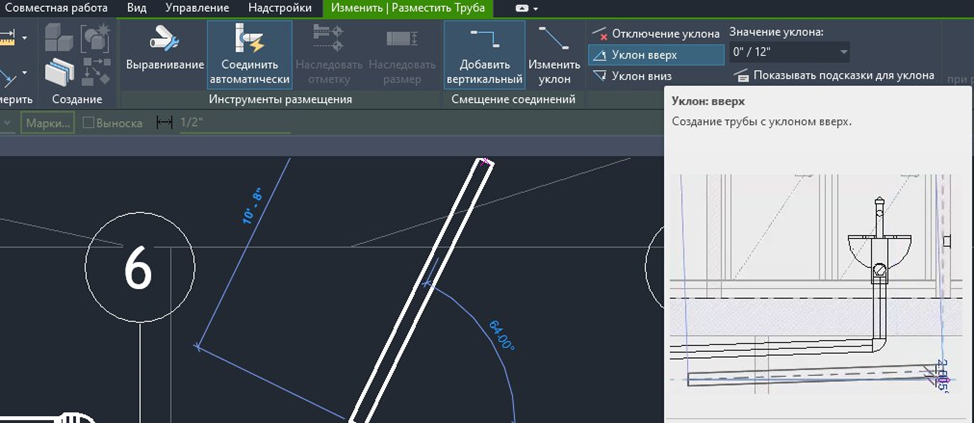
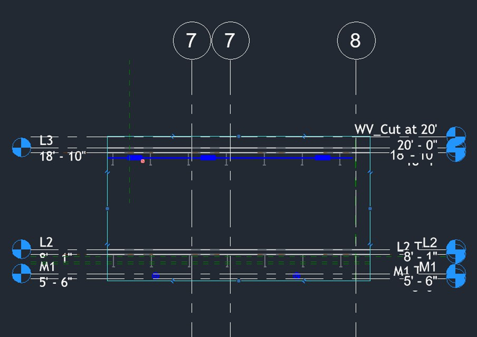
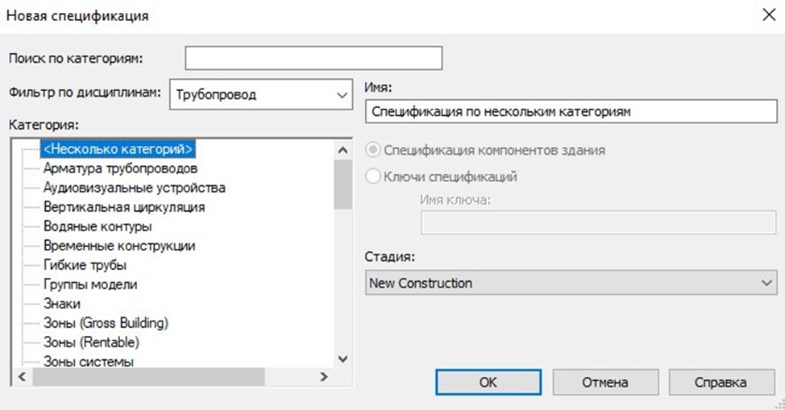
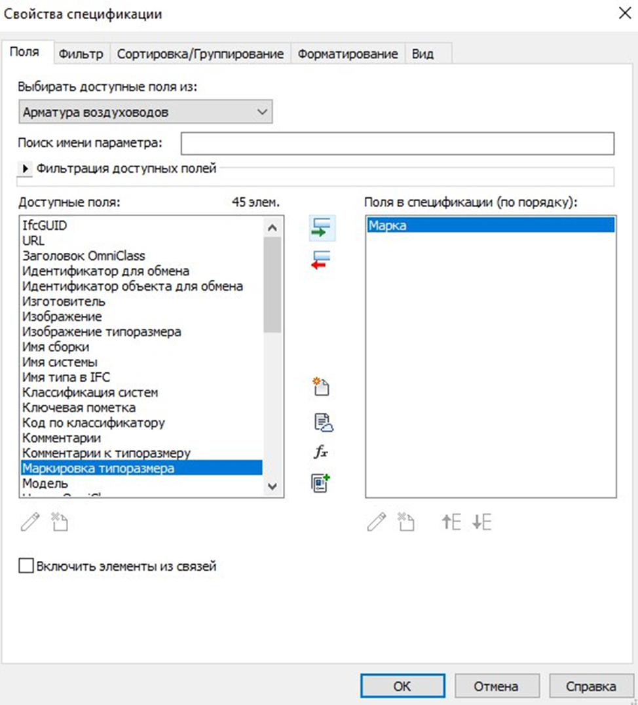
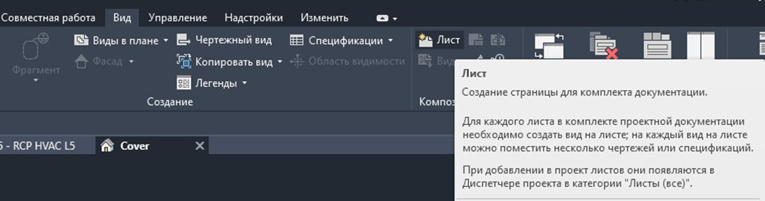
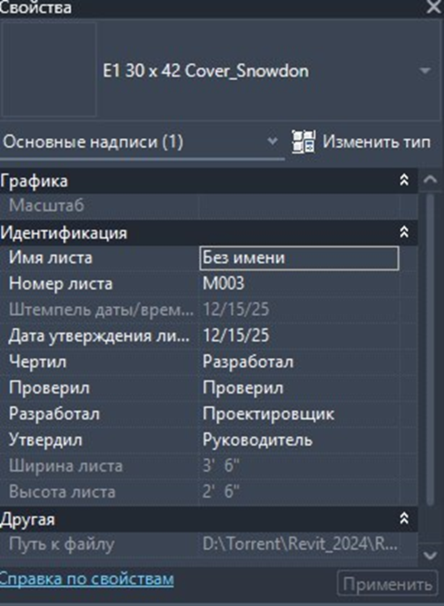

Создание систем вентиляции и отопления в Revit

Основной принцип, который отличает работу в Revit от AutoCAD: вы создаете не просто линии на листе, а базу данных с геометрией. Каждый воздуховод, клапан или вентилятор – это умный объект с набором свойств: размер, материал, производительность, предел огнестойкости.
Перед началом работы необходимо заложить основу для корректного моделирования и координации со смежниками.
Создание шаблона проекта и настроек
- Шаблон проекта: Используйте специализированный шаблон для инженерных систем или создайте свой на основе типового. В нём должны быть предустановлены нужные типы воздуховодов, труб, семейства оборудования, фильтры видов, шаблоны листов.

- Согласование координат: убедитесь, что ваша модель (файл RVT) привязана к общей точке координат проекта и имеет корректные уровни, совпадающие с архитектурной и конструктивной моделью. Это основа для безошибочной координации.
Настройка систем
В Revit системы ОВиК делятся на:
- Системы вентиляции: Приточные, вытяжные, вытяжные противодымные.
- Системы трубопроводов: Отопление (радиаторное, теплые полы), кондиционирование.
Важно правильно назначать создаваемые сети соответствующим системам. Это позволит использовать встроенные инструменты для расчёта балансировки и оформления спецификаций.
Моделирование систем вентиляции
Прокладка трасс воздуховодов
- Инструмент «Воздуховод»: Выберите соответствующий тип из настроенного шаблона (например, «Прямоугольный, оцинкованная сталь, негерметичный»).

Задание высот: Всегда работайте с привязкой к уровню и смещением от него. Используйте панель свойств для точного ввода отметки Смещения высоты/низа.

Приоритеты трассировки: Помните иерархию: сначала - магистральные трассы большого сечения, затем - ответвления. Следите за минимальными габаритами по нормам (например, высота над проходами).
Расстановка оборудования и арматуры
- Загрузка семейств: Используйте библиотечные или созданные вами семейства для вентиляторов, клапанов, шумоглушителей, решеток.

- Ключевой момент - противопожарные клапаны: Для огнезадерживающих (ОЗК) и дымовых клапанов в свойствах семейства обязательно указывайте предел огнестойкости (например, EI 90). Это критично для корректной спецификации и проверки по СП 7.13130.
- Соединение с системами: Все оборудование должно быть «подключено» к смоделированным сетям воздуховодов, иначе Revit не увидит его как часть системы.
Моделирование систем отопления
Прокладка трубопроводов
Принципы аналогичны воздуховодам:
- Инструмент «Труба»: Выбор типа из шаблона (например, «Стальная, электросварная, Ду25»).
- Указание систем: Четко разделяйте системы: «Отопление-радиаторное», «Теплый пол», «Холодоснабжение».
- Уклоны: Для систем с естественной циркуляцией или дренажа используйте параметр Уклон в панели свойств при рисовании.

Расстановка отопительных приборов и оборудования
- Используйте семейства радиаторов, конвекторов, тепловых пунктов.
- Важный параметр: Тепловая_мощность. Его можно связать с расчетами, выполненными в специализированном ПО, или ввести вручную. Revit может использовать эту мощность для условных расчётов.
Получение чертежей и документации из модели
Создание основных видов (планов, разрезов, фасадов)
- Планы этажей: Скопируйте архитектурный план с сеткой осей. Используйте Видимость/графика → Включить/Выключить или Вид по этажу, чтобы отобразить только модели ОВиК на нужной отметке.
- Разрезы: Создайте разрезы в ключевых местах (по лестничным клеткам, через венткамеры, по главным коллекторам). Revit автоматически сгенерирует изображение.

- Обозначения: Используйте инструменты Размер, Марка для оформления.
Детализация узлов и фрагментов
- Вид в разрезе: Создайте дополнительный разрез в области сложного узла (например, примыкание к вентилятору, обход балки).
- Выносной элемент: Используйте инструмент Выносной элемент на основном плане/разрезе, чтобы создать отдельный, более детализированный вид узла в увеличенном масштабе (1:10, 1:20).
- Детали 2D: Для элементов, которые нецелесообразно моделировать в 3D (сварные швы, крепеж), на виде детали используйте двухмерные деталировочные линии из библиотеки.
Формирование спецификаций (ведомостей)
- Создание ведомости: Вкладка Вид → Создание → Ведомость/спецификация.
- Ключевые ведомости:
Ведомость оборудования ОВ: Выберите категории «Вентиляционное оборудование», «Воздуховоды», «Клапаны». Добавьте поля: Марка, Наименование, Количество, Примечание. В примечания обязательно включайте пределы огнестойкости для противопожарного оборудования.

Ведомость трубопроводов: Категория «Трубы». Поля: Марка, Диаметр, Длина, Материал.

Ведомость отверстий и гильз: Категория «Заполнения отверстий» (если отверстия моделировались) или специально подготовленные семейства гильз. Критически важна для согласования с конструкторами и архитекторами.
Листы и компоновка
- Создайте листы нужных форматов (А1, А3).

- Разместите на листах подготовленные планы, разрезы, узлы, ведомости.
- Заполните основную надпись через боковую панель «Свойства»

Практическая часть